How We Became the Most Up-To-Date Monitor of Github Activity on the Web in One Month
This is the story of how two developers set out to discover the top contributors to open-source. We do this by tracking the top 100,000 most starred repositories on Github. Some stats about the project:
- 1,200,000+ Requests Per Day (RPD)
- 20,000,000+ Records (and counting)
We are going to walk you through the major struggles we faced and lessons learned along the way.
Wait, who are we you ask?
 Lukas
Lukas

We are two full stack developers! Also, I (Lukas) happen to be looking for work! Click on my face to see my credentials.
Table of Contents
- Getting Started: Developing the Data Acquisition Process
- Ensuring Uptime of Data Acquisition
- Growing Pains: Improving the Rate of Data Acquisition
- Rendering the Data
- Making Requests Count
- Future Work and Lessons Learned
How it all Began
Open Source Watch started as a collaborative idea between me, Lukas Nimmo, and Michael Mentele. We wanted to gauge the activity of open-source projects on Github and find out who the heroes of open-source are.
The questions we asked were:
- What are the most active repositories?
- Who are the most active users?
- What issues are most active?
- Which users communicate the most?
Here is a look at Open Source Watch (OSW):
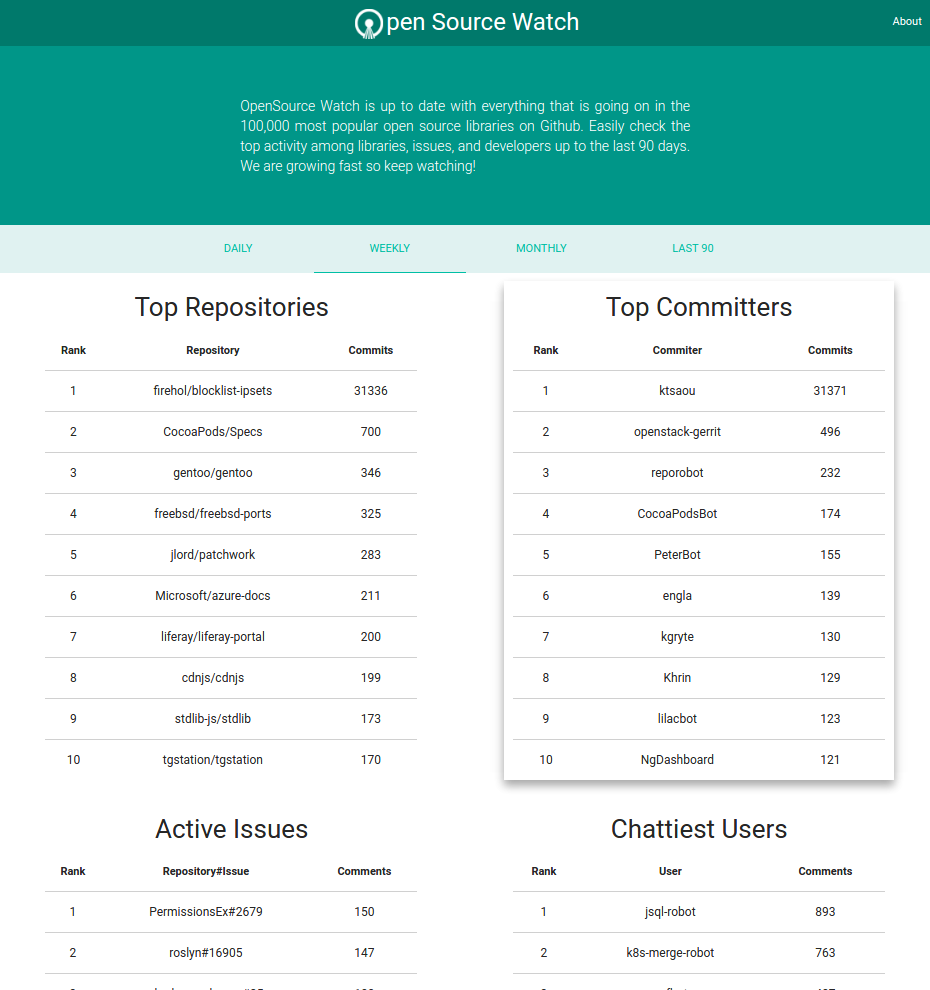
The homepage consists of AJAXified sprinkles for the table displays and styles provided by the Materialize framework. Take a long look (or go to our website) because we won't be talking about this much.
The focus of OSW is answering questions and to answer questions, we need to focus on data. The rest of the conversation will center on acquiring data, setting up infrastructure, and tuning our system.
Getting Started: Developing the Data Acquisition Process
We believe that developers should be able to see updated information from when they begin their work day to when they finish. For that reason we initially selected an 8 hour window as our target.
First, we need to get the repository URLs of the projects we are going to track. Our simple solution was to retrieve the top 100,000 repositories using Github's Search API. We did this by searching most starred repositories in descending order and paginating through the JSON returned by Github.
Tip: Double check your data streams! Third-party API's are not always robust. Github's Search API can be flimsy and inaccurate, with holes in the data. We had to be very careful, for example decrementing the star count by one each time to ensure our data was complete. If we had relied on Github's 'next page url' we would have had dirty data!
Iteration 0
Luckily, scraping the top Repositories was a one-time job. We stored the data in a PostgreSQL database and charged ahead with a single process to begin scraping!

One process can achieve 8,500 requests on our Digital Ocean server. We did some extrapolation and estimated it would take 36 hours to scrape all 100,000 repositories one time through (with an average of 2.8 requests needed per repository)!
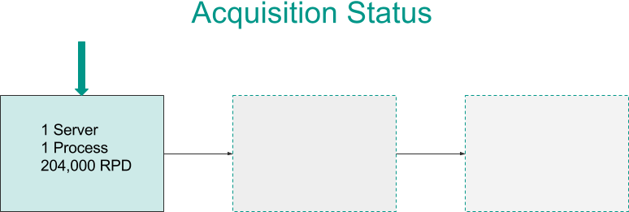
This is 4.5x slower than our target. So, what to do? Scale up! More scrapers means more capacity and with 6 processes we can get within the 8 hour window.

The Problem of Shared State
Initially, our scraper kept the list of repos internally as a circular queue. We shift from the front and immediately push that repository to the back like so:
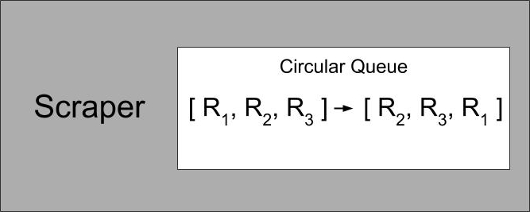
With this data structure we can always ensure that we are getting the oldest repository in O(1) time.
However, that data is stored in-memory within the process itself. If we scaled as is, they would not be working off the same queue; each would work through its own list independently:
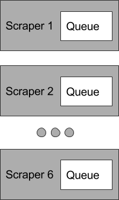
What we want is for our scrapers to be working off the same list. Therefore, we extracted and centralize this queue state like so:
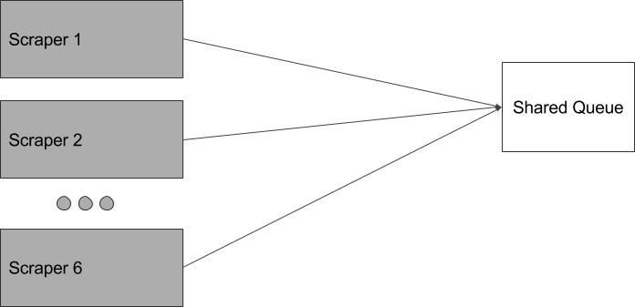
Coordination Options
Okay, how do we implement this? Two options occurred to us...
First, we could use the current database as a pseudo-queue by timestamping the repository every time we scrape it, and then making sure we retrieve the record with the oldest 'updated_at' column. However, this means that every time we want the next repository, we have to do a scan to find the oldest timestamp. This is awfully slow:
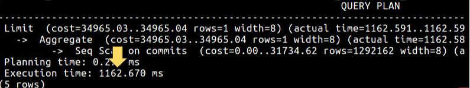
What if we indexed that column?
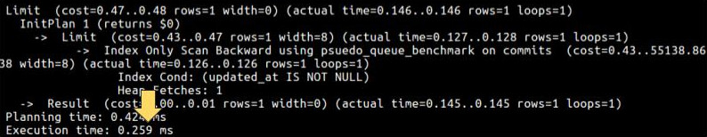
It's definitely faster. And if we scale it would do so in O(log(n)) time, which isn't too bad. But, if we ever scale the repositories we track it will still slow down somewhat.
We prefer the O(1) complexity of a circular queue data structure.
Enter Redis; Redis is often used as a shared queue for workers. It allows us to implement the circular queue directly. Here is an example benchmark to get an idea of its throughput:
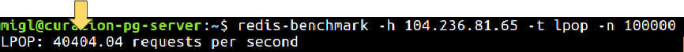
Since we use the queue data structure, the operation is always O(1). On top of that, our system is now more orthogonal as the concerns of storage and coordination are separate.
Collaboration
Here is the how collaboration is implemented with Redis:

There is a queue object that is a layer on top of Redis which manages the queue. The dispatcher, the interface between the scrapers and the queue, then requests the next repository from the queue object. The queue object shifts a repository from the front of the Redis queue, copies it, and immediately pushes it to the back of the queue. The dispatcher gets a clone and passes the data from the queue to its collaborating scraper agents.
Cost-Benefit: Scale Up or Scale Out?
Now that the scrapers can coordinate via the Redis queue, the next question is whether to scale up or scale out. We could scale up and stack concurrent on one high memory server.
Discovery: We had a few concerns like our IP being blacklisted by Github so we did some testing and it turned out to be a non issue for our use case.
Initially, we were being throttled hard (because we looked like a bot--which we were) but we soon realized this was only for repeatedly hitting the same url hundreds of times if instead we used a round-robin approach Github was none the wiser.
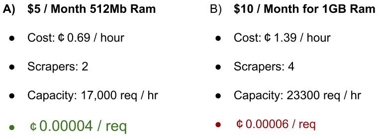
Our processes are memory hogs, but it doesn't matter as more than two processes give diminishing returns. Dollar for dollar it would be better ROI to scale up, and maximize our low memory machines and then scale out from there.
We spin up a second process on our server...
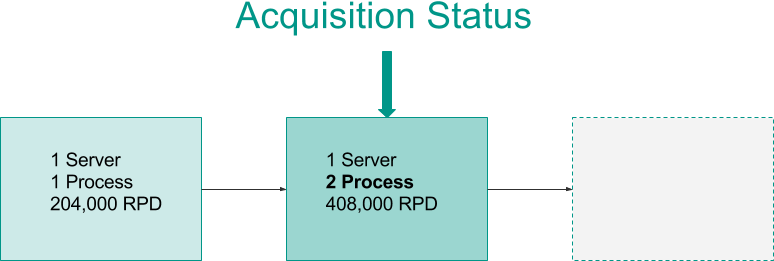
Scaling Out
We are doing a decent job of maximizing our machines so we spun up two more servers with two processes each.
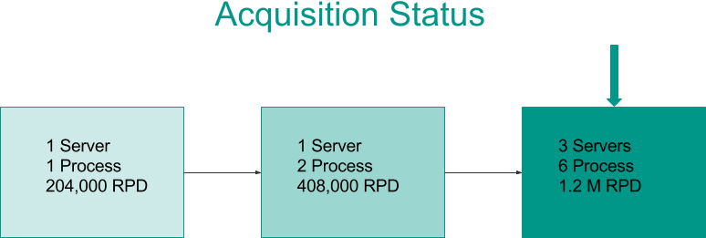
Now, four times a day (every 6 hours) we scrape the top 100,000 repositories on Github using 3 servers (represented by the dispatcher objects) which are coordinated by a Redis queue. This is well within our 8 hour window!
In total, roughly 1.2 million requests per day are made to Github (don't worry, we won't be overwhelming them anytime soon).
An updated system overview:

We now have many servers with multiple processes sharing a single queue on Redis. Everything is great!
Or is it?
Note: We can get more out of our hardware. Our processes are memory hogs. However, the tradeoff of developer time spent working on optimizing an already cheap process was not worth the opportunity cost of further development.
Ensuring Uptime of Data Acquistion
More Servers, More Headaches
Now that we have six processes, all of them must be micromanaged. Why? The remote SSH connection (to each process) must remain open on our local machine to run the scraper process. Overall, this means six open connections for monitoring, controlling, and restarting. Do I need to tell you this is extremely time consuming?
A normal day might look like the following: wake up, check on the processes from the night before, and—
Gasp! The scrapers all crashed in the middle of the night!
Losing this valuable time meant we lost hundreds of thousands of requests. We would then debug and redeploy with no guarantee that we wouldn't run into some other edge-case.
On top of all of this was an additional cost of cognitive load:
every.10.seconds do
train_of_thought.derail
if scraper.down?
train_of_thought.crash
scraper.debug
scraper.start
dev.pray
end
end
Babysitting the scrapers meant we were constantly distracted. This grew especially tiresome whenever we needed full concentration to focus on something important; not a very efficient use of time at all.
Much of this had to do with handling brittle data. We were essentially trying to rescue every edge-case for data we can't control. This cost too much time. We needed failover and process recycling.
How can we stop micromanaging our scrapers?
As we mentioned, in order to keep the scrapers running, a connection had to remain alive between our local machines and the remote ones. Why? The scraper process is attached to the SSH session. In Linux, everything is a process and the scraper process is a child process of our SSH session. Therefore if the ssh session dies, so too does the scraper process.
We need to detach from the SSH session and move the scraper to a background process. When a process is forked and then exits, it becomes an orphan. Any orphan processes are then gathered up by the init process, the "grandfather" of all other processes.
Enter daemons. Daemons are background processes that are in no way attached to a terminal so we can close the SSH connection and it will still run. One of the downsides of this is the necessity of thorough logging: no longer will the SSH connection be active, which means that even if the daemon's output was printed to STDOUT, there would be no way to see it.
Binding Daemons to Our Will
We have these background processes, so how do we ensure the daemons are always running? We first considered Monit, but it was much, much more than we needed and the time required to familiarize ourselves with it just wasn't worth it.
In the end, a simple Bash script was settled on:
while true
do
rake ScraperDispatcher:scrape_commits
done
Each scraper process is run as a Rake task wrapped within an infinite Bash loop. In the case that the Rake task crashes, it restarts the process. The only way this loop will every be interrupted is if our server crashes or the bash process is killed.
We initiate this entire management process with a CLI application.
The Power of Daemons
Below, you can see the status call of the CLI app we've written to remotely manage our daemons:
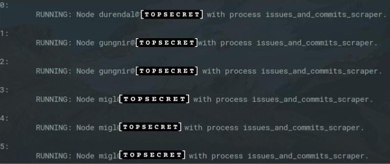
From our one console, with a few keyboard strokes, we can check on all of our scrapers. Centralized control makes deployment simple, monitoring a joy (if that's a thing), and restarting painless. No longer do the processes have to be micromanaged.
Growing Pains: Improving the Rate of Data Acquisition
We've been acquiring data during the 7 days that we've been working on the project and the database has reached a few hundred-thousand records.
More Questions, More Data
We want to answer questions related to the past 30 and 90 days. We could wait 83 days, but we are programmers; we can do better. The next phase involved scraping the last 90 days of data as a one-time job. Our estimate was that it would take roughly 3 days with our 6 processes.
More data, More Problems
We tweaked our scrapers to grab historical data related over the past 90 days. As we quickly found out, more data meant new problems:
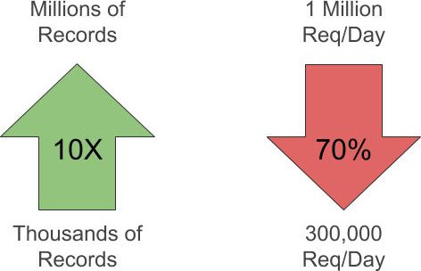
Only scraping daily data brought in around 25,000 new records a day, but we were now getting hundreds of thousands to millions of records a day. Our request capacity quickly plummeted to 30% of what we expected.
We've been downshifted...
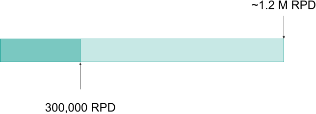
At 30% capacity (of 1.2 Million requests), it will take 10 days to retrieve all the data needed. That's far too long.
Putting on Our Thinking Caps
Our scrapers are waiting on something in the system. What should be considered?
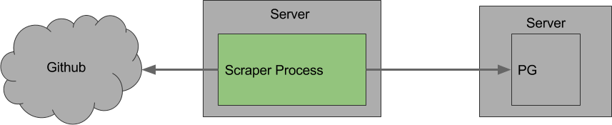
Well, our server activity hasn't increased, in fact it has decreased, so we can eliminate the scraper servers right off the bat.
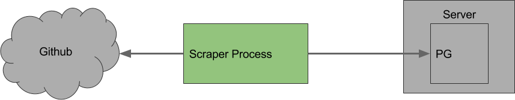
Our request activity has decreased, so it can't be anything to do with Github.
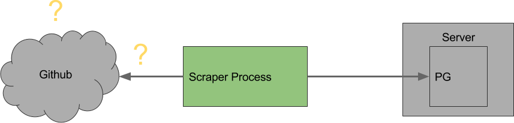
The only difference is the number of records that are being retrieved. Now that our responses are often rich with new data that needs to be stored, is it possible the DB server is being overwhelmed? No, the CPU usage is high, but far from being overwhelmed.
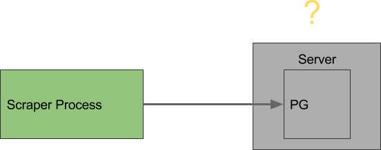
All that remains is something to do with Postgres or the connections to Postgres.
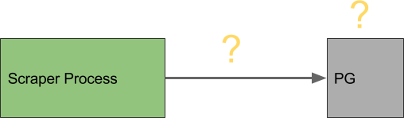
Is Postgres Itself being Overwhelmed?
With 6 processes, we are writing to the database more often. Is it possible that Postgres can't handle writes from all six servers at once?
Here is a benchmark of the insertion speed into Postgres:
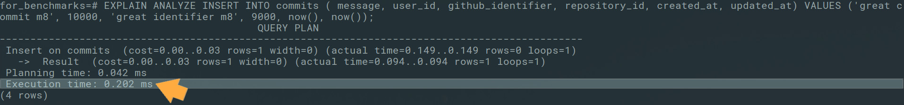
PG Insertion Capacity
= (60 / .000202) insertions / min
= 297,029 insertions / min
Current AVG Rate of Insertions = 2000 insertions / min
With the current rate < 1% of capacity, insertions are not the problem. We will have to keep sleuthing...
Is it Slow Reads?
If the problem isn't insertions, what about reads? Here is an example of attempting to find an issue if it exists, else make a new one:
issue = Issue.find_or_create_by(
repository_id: built_issue['repository_id'],
issue_number: built_issue['issue_number']
) do |i|
i.name = built_issue['name']
...
end
issues << issue
This is necessary as there is a need to associate issues with their respective comments:
# Get all the comments for each issue
issues.each do |issue|
...
raw_comments.each do |raw_comment|
...
comment_hash['issue_id'] = issue.id
@comments_cache << IssueComment.new(comment_hash)
end
end
We began to benchmark our queries and we noticed that when a search is made for each issue, it is done on two non-indexed columns. This sequential scan is O(n) because we need to scan two columns of arbitrary size. If we index these columns together, the complexity can be reduced to O(log(n)).
Here is before indexing:
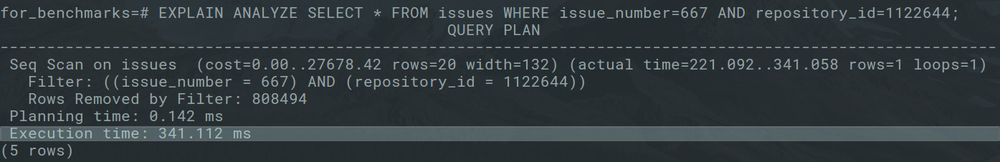
and after indexing:
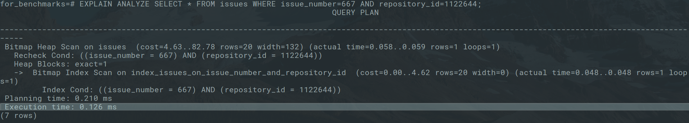
Before, it took a whopping 341 ms just to look up an issue in the table with a sequential scan.
After, it does a heap scan which significantly impacted the lookup time; a 2700X difference. From then on we knew to keep a close eye on other similar situations.
Gaining Speed...
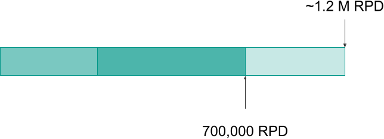
We picked up a great deal of speed with the index. At this moment in time, the system was running around 60% capacity.
While this was much better, it was still slow...
Is it Aggregate Latency (many queries over the wire)?
Our queries are now fast enough, but are too many being made? Again, it required looking through our code and thinking about how it was interacting with the database. Eventually, this caught our eye:
# Get all the comments for each issue
issues.each do |issue|
...
raw_comments = @github_doc.doc.css("div.timeline-comment-wrapper")
raw_comments.each do |raw_comment|
comment_hash = build_comment(raw_comment)
comment_hash['issue_id'] = issue.id
@comments_cache << IssueComment.create(comment_hash)
end
...
A query was being made for each and every issue comment that was created. What if, instead, we cached records in memory and replaced many separate queries with one bulk import?
Aggregate Latency Begone!
Instead of immediately attempting to create an issue comment, a new IssueComment model instance is added to an array so that the above code now looks like this:
# Get all the comments for each issue
issues.each do |issue|
...
raw_comments = @github_doc.doc.css("div.timeline-comment-wrapper")
...
raw_comments.each do |raw_comment|
comment_hash = build_commnet(raw_comment)
comment_hash['issue_id'] = issue.id
@comments_cache << IssueComment.new(comment_hash)
end
...
And whenever the array cache reaches above 30 records, a batch insert is made on all records in the cache:
# Continuing from above...
...
if @comments_cache.count > 30
IssueComment.import(@comments_cache)
@comments_cache.clear
end
end
Why 30? It just so happens that is the maximum number of issues on a page.
Here is a visualization:
Many Queries
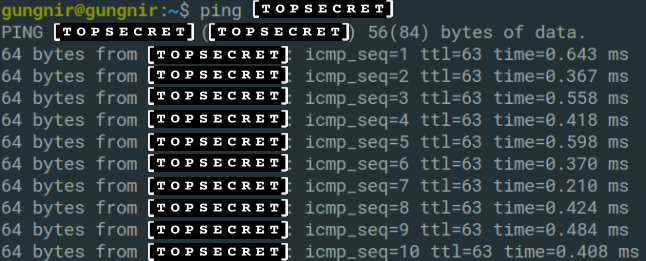
Single Query
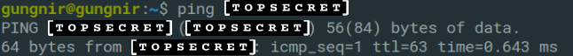
This is just a visualization. The latency between the scraper server and database server is extremely fast, less than a millisecond, but if latency exists for every single query, and a large number of them are made, then the latency starts to add up. In this case, it meant around 30 less round trips to for each bulk import.
Getting Faster...
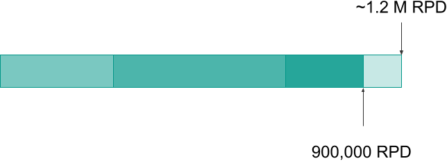
At this point, we are somewhere near 80% capacity, but we didn't give up the pursuit of optimization quite yet...
Behind the ORM Curtain
Say we have the following validation:
class IssueComment < ActiveRecord::Base
...
validates :github_created_at, uniqueness: { scope: [:issue_id] }
end
Behind the scenes, ActiveRecord sends another query over the wire every time we attempt to create a record:
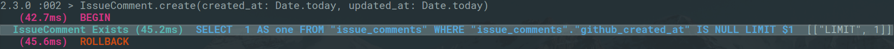
Above, we spoke of reducing total queries from around 30 to 1, but in reality they were being reduced from around 60 to 31. All the validation queries were being fired separately, one-by-one behind the scenes for each insertion.
If the validation is pushed down to the database as a constraint, the no longer will an extra query be made for a creation attempt...
Pushing Validations to the Database
Here is a snapshot of what the constraint now looks like:
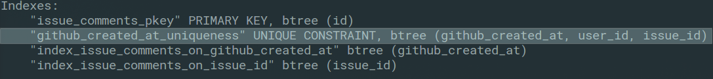
And here is a creation attempt:
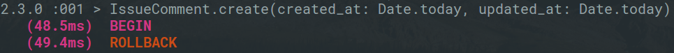
As you can see, no more extra queries! We have successfully reduced the number of queries from around 60 to 1!
Back up to Speed
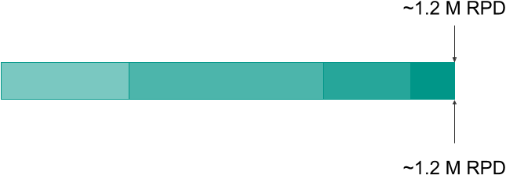
At this point, we are now back to the capacity that we had originally anticipated. You'll notice that 5th gear was never reached! That is not a mistake. Our acquisition could still be further tuned, but we'll get to that later.
Rendering the Data
After all of that hard work, how about we take a look at some of the data we've collected? by going back back to the webpage:

We need to make 16 queries in total (4 questions and 4 time ranges). In total, that takes approximately 50 seconds to load...
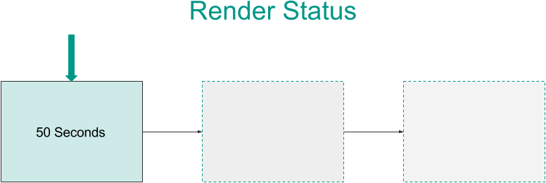
No one wants to see OSW that bad!
Putting our Thinking Caps Back On...
This is a typical query (1 of 16) displayed on the webpage:
SELECT users.*, count(users.id) AS hit_count
FROM "users" INNER JOIN issue_comments
ON issue_comments.user_id = users.id
WHERE ("issue_comments"."github_created_at"
BETWEEN (CURRENT_DATE - INTERVAL '0 day' + TIME '00:00:00')
AND (CURRENT_DATE + TIME '23:59:59.99') )
GROUP BY users.id ORDER BY hit_count desc;
Here is an analysis of the query above:
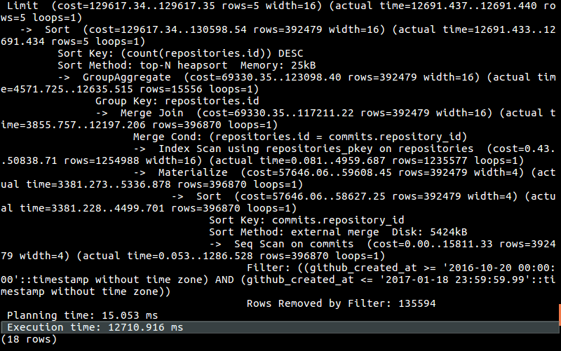
The query takes almost 13 seconds (remember, this is 1 out of 16 total queries that need to be made). It's slow. Very slow. And there is no way around that.
But why is it slow?
Well, we have to join a couple tables that have millions of rows:
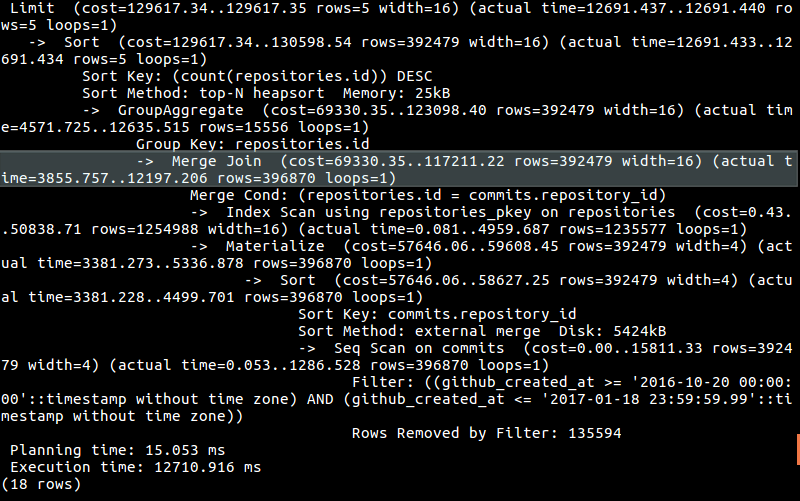
Then we do some aggregating:
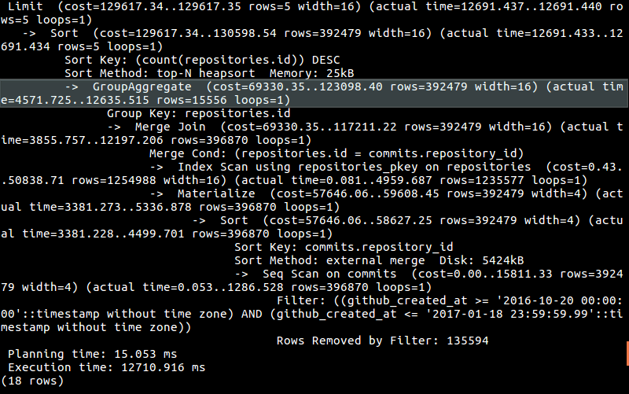
Can we optimize our query? There is no obvious solution there.
Can we denormalize and remove the costly join? Yes. If we did that we would could potentially cut the query time in half, or 25 seconds. That still would not be enough. We need ALL queries together to take less than 100 ms so that the webpage load times do make a negative impact on the user's experience.
We need orders of magnitude difference in speed!
Can we Cache the Query?
Looking at the query again:
SELECT users.*, count(users.id) AS hit_count
FROM "users" INNER JOIN issue_comments
ON issue_comments.user_id = users.id
WHERE ("issue_comments"."github_created_at"
BETWEEN (CURRENT_DATE - INTERVAL '0 day' + TIME '00:00:00')
AND (CURRENT_DATE + TIME '23:59:59.99') )
GROUP BY users.id ORDER BY hit_count desc;
There is no interpolation of user input; the queries that we make on the webpage never change and because they never change, we can run them in advance and cache them.
Taking a big-picture look at the system, is it okay for our data to be stale? Yes. We scrape the top 100,000 repositories every 6 hours, so we already have a 6 hour margin of error. Keeping our queries perfectly in sync with our database doesn't add any meaningful business value.
With these criteria considered, we can go ahead with the caching.
Lazily Loaded Table Caching - Custom Tables?
Lazily loaded caching is required because our system is heavily geared towards write operations.
One option for lazily loaded caching included the following:
1. Build a lazily refreshed custom table
2. But then functions would need to be created to update timestamps with:
- insertion
- update
- delete
3. Finally, we would need to specify a function to handle actually updating stale rows
OR
We could use Postgres' built-in materialized views and refresh periodically with a cron job which looks like this:
every 5.minutes do
rake 'refresh_matviews'
end
The Materialized View Impact
Depending on the database solution, there will be different ways to create views and cache queries. For those of you familiar with Postgres, all that is needed is a built-in keyword to tell PG to cache the query results:
# Cache view/query
CREATE MATERIALIZED VIEW my_cached_query AS [SQL query goes here];
That query can then be queried as if it were a table:
# Query like a normal table
SELECT * FROM my_cached_query;
The query will need to be refreshed periodically (in our case we did this with a cron job):
# Refresh the view
REFRESH MATERIALIZED VIEW my_cached_query;
Disclaimer: materialized views are only useful for static SQL queries that can be allowed to have stale data. We qualified this by only updating the matviews every ten minutes.
The impact of using materialized views is huge...
Queries are 250 times faster!
That is almost as fast as the round trip to our server and back! Awesome!
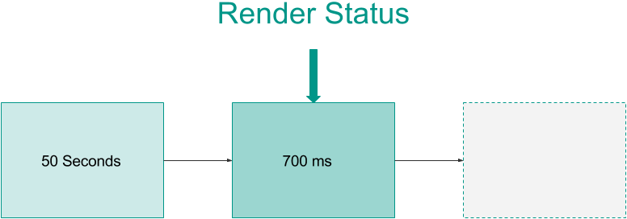
Until We Added that N+1 Query...
One of the questions we try to answer involves displaying a repository for each active issue we were displaying:
<% @issues.each_with_index do |issue| %>
<tr>
<td>
<%= link_to issue.repository_name, issue.repository_url %>
...
For each issue, there is an additional query made for the associated repository. Here is what it looks like at the database level:
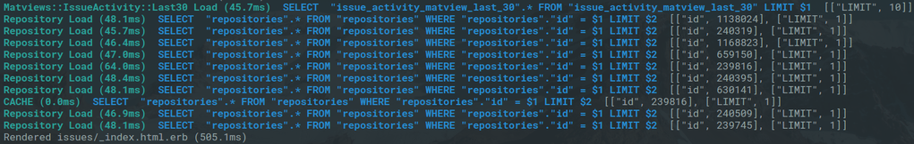
To fix it, a join was added so that the repository information needed already lived on the cached query:
SELECT tmp.*, repositories.name
AS repository_name, repositories.url
AS repository_url
FROM (
...
) as tmp
INNER JOIN repositories ON repositories.id = tmp.repository;
Now when the server-side rendering looks like this at the database level:
No more N+1!
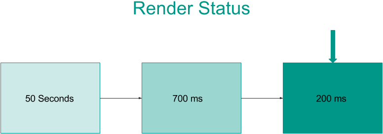
Impact of Server-Side Rendering Performance Tuning
After all of this, it helped us achieve the following:
50+ s query times * to *200 ms
and with four queries per page...
50 ms query time per page
Huge improvement!
Making Requests Count
If you remember, we were handling our repositories like this:

It's a "stupid" circular queue, meaning all repositories are scraped at the same rate.
Not All Repositories are Created Equal
Treating all repositories the same in relation to scraping is rather unfortunate because the top 1% of repositories by commit activity are responsible for 42% of commits:
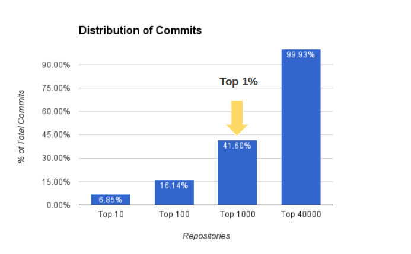
On top of that, the top 40% of repositories by activity account for 99% of the top 100,000!
Maybe it's unfair, but more active repositories should be updated more often so as to reduce the latency between when the activity is pushed to Github and our webpage.
Priority Queue?
Priority is key.
Let's think about what is needed. Take a look at the following chart:
Say, for example, there is a list of repositories in Redis and the numbers above represent their activity rank where 10 is the most active.
When the queue is first popped, the most active repository is popped and then maybe we put it somewhere in the middle:
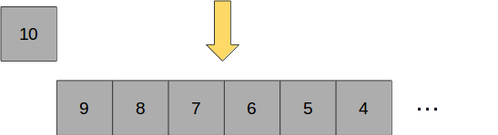
The next time the queue is popped, the second-most active repository is removed from the queue and placed further down the from the middle as it is less active than the previous repository and therefore needs to be scraped less:
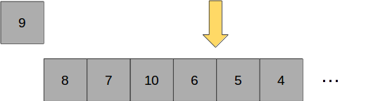
But how, exactly, will it be implemented?
Failed Priority Queue Experiment: Binary Heap
The first idea was to create a binary heap and maintain it as a priority queue. This was originally look at because priority queues are common use cases for binary heaps.
What is a binary heap1? Put simply, it is a balanced and complete tree:
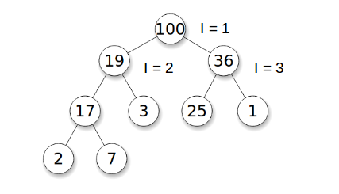
It has a "heap property", meaning all nodes are greater than or equal to their respective children. In other words, the highest scored element will always be the root of the tree.
The most promising feature is that a binary heap can easily be represented as an array. The representation works as follows: the children of an i-th element are always 2i and 2i + 1. This means it can be represented in Redis with ease:
# Example of heap expressed as array
[nil, 100, 19, 36, 17, 3, 25, 1, 2, 7]
Wait... can we resort to this so simply? No. A value is pushed by adding it to the end of the array and then bubbling it, or heapifying it, through the tree. That entails multiple requests or pulling down the entire state of the Redis queue for resorting. Also, what happens when multiple scrapers are involved:
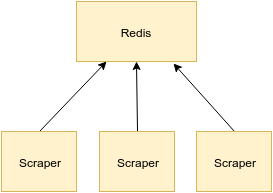
If multiple scrapers are attempting to bubble values up through Redis, or dequeueing while other processes are enqueueing?
Put simple: it won't work. We could no longer be certain the root value is the highest scored or that any other values are where they should be if any of the enqueueing or dequeueing is done in parallel.
Failed Priority Queue Experiments: Sorted Sets
What else can we do? Well, Redis has a built-in data structure called a sorted set that holds key values where the key is the "score." As an added bonus, Redis implements something similar to the binary heap behind the scenes and is smart enough to handle the concurrency problem for us. Great!
However, is Redis fast enough to re-sort 100,000 items faster than we can throw requests at it? Right, the maximum number of requests with 6 processes is 14 requests per second. That means Redis has to resort 100,000 items 14 times a second in addition to creating a response. Even further, what if we double requests capacity down the line?
Good question. We didn't benchmark it because there is a simpler, more important problem to consider. We have to score our values based on the priority level and then reduce the score based on the number of times they have been visited. An example calculation would like this:
score = priority / (times_scraped + 1)
If that is plotted for a few priority values it yields:
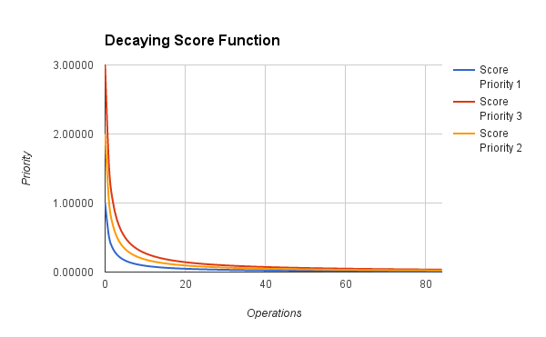
One problem is that as time goes on, all scores approach zero which means that periodically we will have to shut everything down and reset the score. This additional process must be maintained and if for some reason it doesn't refresh the scores then the whole priority queue breaks. Not only that, if capacity is increased without updating the process it breaks. There is a high maintenance cost involved with resorting to this method without even being sure Redis will be fast enough. Not to mention, how do we tune the frequency distribution? This sounds more painful than it should be.
What is really nice about a circular queue is that the oldest repository is always known and it is has the fastest possible enqueue and dequeue. Can we prioritize, but keep those advantages? Can we prioritize without scoring and sorting?
What do we Really Want?
Let's go back to the ranked list of nodes:
and let us lump this list into three priority levels like so:
We are going to say say that the frequency ratio is 10:5:1. What we really need is to be able to control the frequency with which each priority level is scraped.
For example, 3 would be scraped 10X by shifting the first node from the front and pushing it to the back of the subset of nodes with a priority of 3:
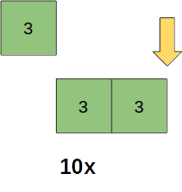
And do the same with priority level 2 and 1 with frequencies of 5x and 1x respectively:
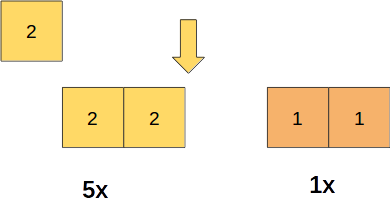
All of this led to the following...
Staggered Round-Robin Prioritized Queue-of-Queues!?
To prioritize and tune the scraping frequency we used a staggered round-robin prioritized queue-of-queues.
Or SRRPQQ for short.
We began by ordering our list of repositories by activity and then range mapping that ordered list into X number of "buckets" where each bucket will get its own Redis queue:

Then when the dispatcher requests a repository, it will actually be interacting with a priority queue object which has a method to draw from each bucket at the frequency we need:
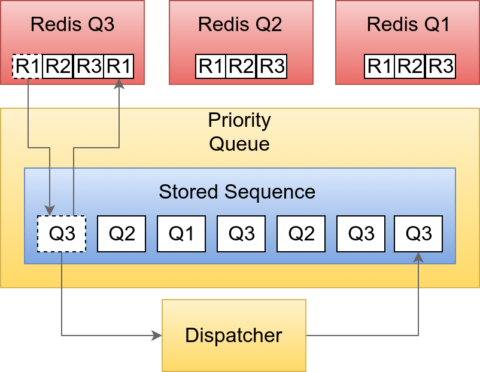
This may appear to be a lot to take in, but it really just is a smart priority queue that allows us to easily give more attention to more active repositories and thereby reducing latency between when something is pushed to Github and when that information shows up on our webpage.
How is this all implemented?
The Code: Enqueueing
First, we calculate the size of each range:
def enqueue_prioritized_sub_queues(tracked_repos)
bucket_size = (tracked_repos.count.to_f / PRIORITY_RANGE.length).ceil
Then we range map the sorted list of tracked repositories:
# Enqueue a sub queue for each priority level
index = 0
tracked_repos.in_groups_of(bucket_size, false) do |batch|
Then we create a stupid circular queue for each bucket and enqueue it into Redis:
priority = PRIORITY_RANGE[index]
queue_name = sub_queue_name(priority.to_s)
index += 1
sub_queue = CircularRedisQueue.new(batch, queue_name: queue_name)
sub_queue.enqueue_redis
end
end
The Code: Tuning and Dequeueing
We'll now assume there are 3 circular queues in Redis. We then tune the frequency distribution of scraping in the priority queue object with a reference to each queue we that looks resembles something likes this:
[3, 2, 1] + [3, 2] + [3]
Which is generated from the following method:
def skewed_distr_of_queues(queues)
skewed_queue_distr = []
while queues.length > 0
queues.each do |q|
skewed_queue_distr << q
end
queues.pop
end
skewed_queue_distr
end
This above loop maps the number of references to the priority level e.g. 3 would be scraped 3 times, 2 two times, etc.
Now there is a circular queue of queues! To retrieve the next repository, we rely on the each circular queue object to know which repository to return:
def next
# get leftmost queue and push to the end
queue = @queues.shift
@queues.push(queue)
# return the next repository
queue.next
end
Frequency Distribution of Scraping
The code you saw previously gives us a distribution like this:
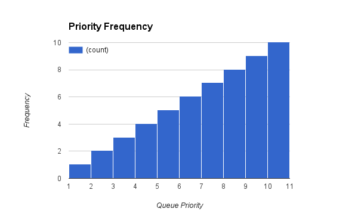
If we tune it further by modifying the population of queue references we achieve a distribution that more closely matches the activity of repositories.
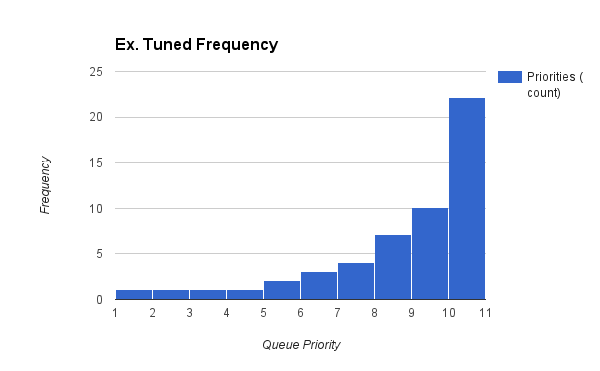
The Staggered Round-Robin Queue-of-Queues is simple, as fast as possible (zero sorting), and gives precise control over the scraping distribution.
The Future and What We Learned
What does the future hold for OSW? Let's take a look...
Reaching 5th Gear
To start off, all top 100,000 repositories are scraped within a 5.5 hour time frame. We would like to push that to under an hour.
Right now, even though our queries are efficient enough, the scrapers still have to wait on them. Here is a diagram that represents the current state:
Instead of waiting on queries at all, we can maximize server resources if we git rid of the wait time altogether:
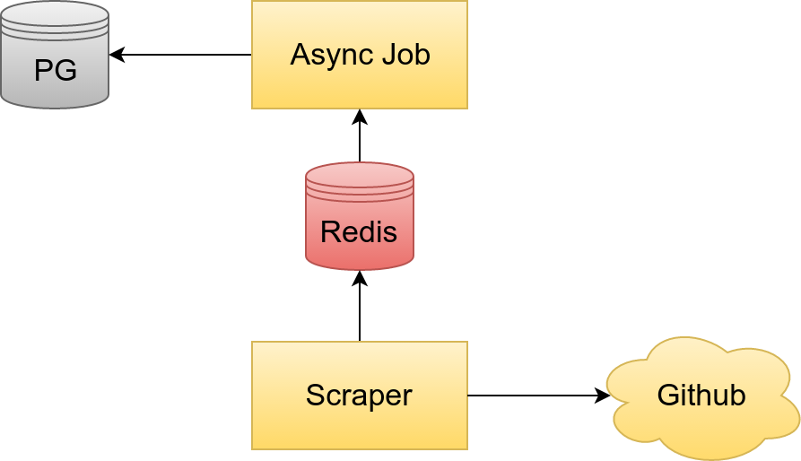
Here we decouple the scrapers from the PG database by using background jobs to extract all record interaction into an asynchronous job that handles CRUD actions for the records. This way our scraper can be dedicated just to pulling data down as fast as possible. Altogether this should boost capacity to the maximum possible on each machine.
The other benefit is that the scrapers will use less memory because they wont' need to know about the ORM. The extra memory that normally would have been loaded with each scraper can be used to for extra processes to ensure we are getting the most out of each server.
For the Fun of It
- Commit/comment message sentiment analysis
- Tracking trending repositories
- Tracking the top 1 million repositories
What We Learned
We learned quite a few things over the course of this project, but there are a few we especially wanted to highlight:
Questions drive acquisition and acquisition drives infrastructure. In other words: spend time on things that solve the problem at hand.
Identifying bottlenecks and solving them are more often than not the highest leverage areas and have the biggest ROI on time invested.
Teamwork is an amazing thing.
Keep a journal! Daily journals are incredibly useful for reviewing your workflows, identifying project bottlenecks (human deficiencies), and realizing where you made made bad assumptions
Brain synchronization. One of the greatest challenges of working with another person is getting and staying in sync. Once you have both established a common vision and are working on the same code base it is much easier to move forward. However, diverging ideas occur all the time where you talk about the same thing, but you both have very different mental images of what it looks like. Mockups, diagrams, and representational documentation of some kind are priceless when it comes to eliminating confusion over abstract concepts that are poorly represented verbally.
Psychological safety is paramount. It's good for ideas to bump together; it gets rid of the chaff. Discussing decisions creates a kind of idea evolution where the idea grows, shrinks, and becomes something altogether you never would have guessed; it's better. Being detached from ideas helps with this process and always making sure that the idea is critiqued-not the person! This is something I believe Michael and I handled superbly and I couldn't be more thankful for it.
If you followed along to the bottom, thank you!
And don't forget to visit Open Source Watch!
Again, I'm looking for work! If you're interested feel free to click on my face to see my credentials.